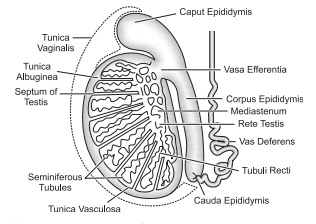
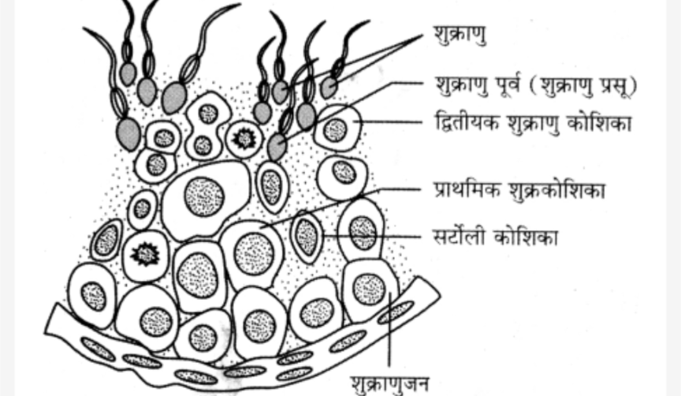
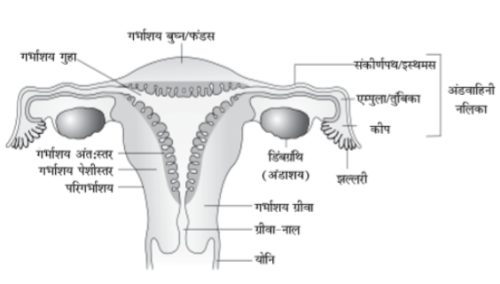
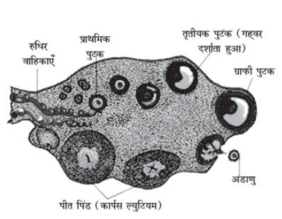
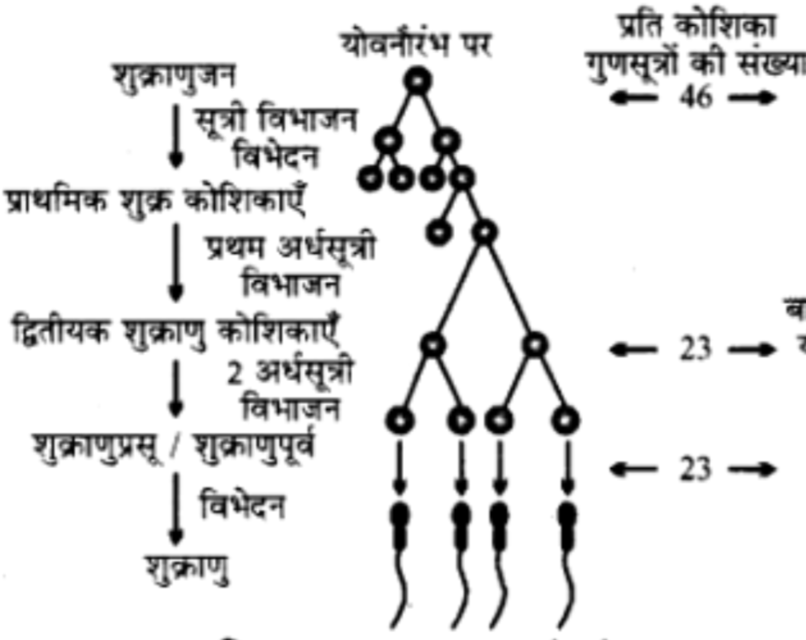
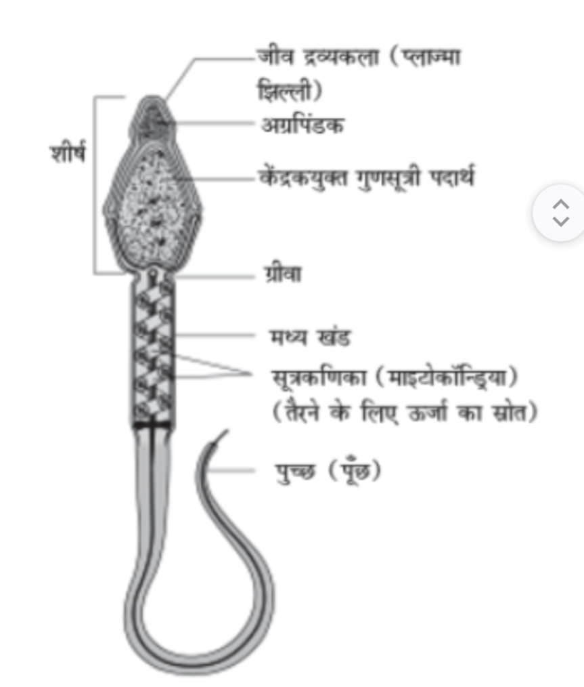
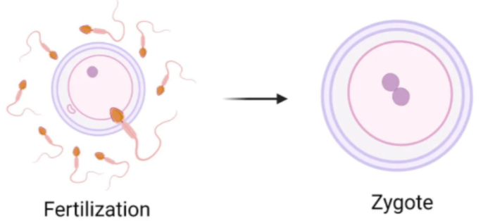
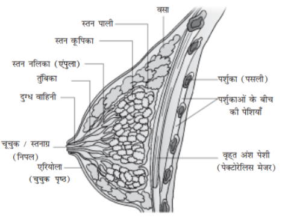

In humans, the fertilisation of the male and female gametes (sperm and ovum) leads to the formation of a new human baby. This is called human reproduction.
The organs that assist in human reproduction are called the human reproductive system.
It is divided into the following two parts.
- Male reproductive system
- Female reproductive system
In the male, the group of testes, accessory ducts and accessory glands that carry out the formation, storage and transport of the male gamete (sperm) is called the male reproductive system.
Labelled diagram of the male reproductive system

Answer -
The names of the male reproductive organs are as follows.
- Testes
- Epididymis
- Vasa deferentia
- Urethra
- Penis
- Accessory reproductive glands
The testis is the main or primary reproductive organ in the male.
In men, a pair of testes is present outside the abdominal cavity, in a sac-like structure called the scrotum.
Each testis is oval, 4-5 cm long and 2-3 cm wide, and is covered externally by two membranes. The inner membrane extends into the testis, dividing it into 250-300 compartments, called testicular lobules.

Main functions of the testis
- The male gametes, sperm, are formed in the testes; this process is called spermatogenesis.
- The testis secretes the hormone testosterone, which helps in the development of secondary sexual characters in males (beard and moustache, deep voice, etc.).
Answer - Sperm are formed in the testes. This requires a temperature 2-3°C lower than the normal body temperature (about 37°C).
The temperature inside the abdominal cavity is higher, which is not favourable for sperm formation. Therefore, the testes are located outside the body so that a suitably cool temperature is maintained.
The testes are located in a skin sac called the scrotum.
The sac-like structure in which the testis is present is called the scrotum.
The scrotum has the following functions.
- It provides protection to the testes.
- It helps keep the temperature of the testes low, which is necessary for spermatogenesis.
Where are Sertoli cells found?
What is their function? (2018 )
The coiled tubules found inside the testis, in which sperm are formed, are called seminiferous tubules.
The wall and internal structure of the seminiferous tubule are made up of the following parts—
- Germinal epithelium - these are the male germ cells, which form sperm through meiosis.
- Sertoli cells - Sertoli cells are found in the testis. These are accessory (supporting) cells.
Function - these provide nourishment and protection to the developing sperm.
- Interstitial cells (Leydig cells) - the special cells found in the spaces (interstitial spaces) between the seminiferous tubules of the testis are called interstitial cells or Leydig cells.
Main function
These cells secrete the hormone testosterone.
Spermatogenesis is stimulated.

It is located between the testis and the vas deferens.
Main functions of the epididymis
- It stores the sperm formed in the testis.
- It brings about the complete maturation of sperm and makes them motile.
- It transports mature sperm to the vas deferens.
Answer - the human epididymis is divided into the following three parts.
- Caput epididymis
- Corpus epididymis
- Cauda epididymis
Answer –
The long muscular tube that carries sperm from the epididymis to the urethra is called the vas deferens.
Answer –
The tube running from the urinary bladder to the outside of the body, through which urine is expelled, is called the urethra.
In men, this same tube also carries semen out along with urine.
Answer –
The external reproductive organ of the male body, through which semen is ejaculated and urine is expelled, is called the penis.
- Prostate gland - this dense gland is located around the base of the urethra.
It forms about 20-25% of the semen.
- Cowper's gland (bulbourethral gland) - this is a paired gland.
Its secretion acts as a lubricant in the penis.
- Testosterone - this is the male hormone, secreted by the interstitial cells.
It helps in the development of the male reproductive organs and in the maturation of sperm.

Answer - the secretions of the seminal vesicles, prostate gland and bulbourethral glands, taken together, are called seminal fluid or seminal plasma.
It contains fructose, calcium and certain enzymes.
In the female, the group of ovaries, accessory ducts and accessory organs that help in the formation of the female gamete (ovum), fertilisation and the development of the embryo is called the female reproductive system.

(2022)
The names of the female reproductive organs are as follows.
- Ovaries,
- Fallopian tubes (oviducts)
- Uterus
- Vagina
- Accessory reproductive glands.
The ovary is the main organ of the female reproductive system, where the ovum is formed. The female has a pair of ovaries. These are suspended in the abdominal cavity by ligaments from the pelvic wall.
Structure:
Each ovary is an almond-shaped structure, 2 to 4 cm long, 1.5 cm wide and about 1 cm thick. It has the following parts.
- Outer layer – the outermost thin layer of the ovary.
- Cortex – contains follicles. The ovum is formed within the follicle.
- Medulla – contains blood vessels, fibres (connective tissue), and lymph vessels. It provides nourishment to the ovary.

Main functions of the ovary
- The female gamete, the ovum, is formed in the ovary.
- The ovary secretes the hormones oestrogen and progesterone, which regulate the menstrual cycle and the development of secondary sexual characters in the female.
Functions of the corpus luteum
- Secretion of the hormone progesterone – this hormone prepares the inner lining of the uterus for pregnancy.
- Maintaining pregnancy – progesterone helps in the development of the embryo in the uterus and prevents menstruation.

Answer –
The thin tube running from the ovary to the uterus is called the fallopian tube.
The fallopian tube has the following functions.
- It collects ova from the ovary.
- It provides the site for fertilisation.
Each fallopian tube has three parts.
- Infundibulum
- Ampulla
- Isthmus (narrow passage)
The uterus is a hollow, muscular organ located in the female reproductive system.
Its upper part opens into the fallopian tubes, and its lower, narrow part is called the cervix.
Its main functions are as follows.
- The fertilised ovum (embryo) develops in the uterus.
- If pregnancy does not occur, the inner lining of the uterus breaks down and is expelled as menstruation.
The vagina is an external muscular reproductive organ of the female.
Its main functions are as follows.
- It receives semen from the penis during sexual intercourse.
- At the time of childbirth, the baby comes out through this passage.
- During menstruation, blood and tissue are expelled through the vagina.
(M.P. 2015)
Answer- the various stages of the process of human reproduction are as follows.
- Gametogenesis
- Fertilisation
- Embryonic development
(i) Cleavage
(ii) Formation of the blastula
(iii) Formation of the gastrula
(iv) Formation of the baby from the gastrula
(v) Parturition or childbirth
(vi) Growth
The process by which gametes are formed from the cells of the germinal epithelium in humans is called gametogenesis. It occurs in the following two ways.
- Spermatogenesis
- Oogenesis
The formation of haploid, functional sperm from diploid spermatogonial cells present in the testis, through meiosis, is called spermatogenesis.
This process takes place in the seminiferous tubules.
This process is divided into two parts.
- Formation of the sperm precursor cells or spermatids: - this process begins at puberty. It is divided into the following phases.
(i) Multiplicative phase → some cells of the germinal epithelium become larger in size and differ from other cells; these are called primary germ cells. These undergo mitosis several times, resulting in the formation of spermatogonia (spermatogenic cells).
(ii) Growth phase → in this phase, the spermatogonial cell grows and changes into a primary spermatocyte.
(iii) Maturation phase → in this phase, the primary spermatocyte undergoes meiosis. In the first stage of meiosis, the primary spermatocyte forms two haploid (n) cells. This is followed by the second stage of meiosis, in which one primary spermatocyte forms four spermatids.
- Transformation of spermatids into sperm, i.e. spermiogenesis - the transformation of the non-motile, spherical spermatids into active, motile sperm is called spermiogenesis.
In this process, the Golgi complex of the spermatid forms the acrosome of the sperm.

Answer - the following hormones are involved in the regulation of spermatogenesis-
- Gonadotropin releasing hormone (GnRH)
- Follicle stimulating hormone (FSH)
- Luteinizing hormone (LH)
- Androgens (mainly testosterone)
- Inhibin factor
The release of mature sperm from the seminiferous tubules of the testis into the lumen of the tubule is called spermiation.
The male gamete that takes part in the process of fertilisation is called a sperm.
Each sperm is thin and elongated, and can be seen only with the help of a microscope. It has the following parts.
- Head:- this is the topmost part of the sperm, containing a large, haploid nucleus, in front of which there is a cap-like structure called the acrosome. This destroys the membrane of the ovum at the time of fertilisation.
- Neck:- this is a small part, containing two centrioles:-
(a) proximal centriole
(b) distal centriole
- Middle piece:- this part is called the "power house" of the sperm; it contains microtubules around which mitochondria are found, which provide energy for the movement of the sperm.
- Tail:- this is the last, long part of the sperm, made up of the plasma membrane.

Answer –
The acrosome is a cap-like structure located at the tip of the head of the sperm.
Function - the main function of the acrosome is to make fertilisation possible by helping the sperm enter the ovum with the help of enzymes.
The formation of a haploid, mature female gamete from diploid oogonia present in the ovary, through meiosis, is called oogenesis.
The process of oogenesis begins in the ovary of a female while she is still in her mother's womb. This foetal ovary passes through several stages.
- Multiplicative phase - in this stage, some cells of the germinal epithelium of the ovary become larger in size and shape. These undergo mitosis several times, forming oogonia. At the time of birth, the number of follicles is 20 to 20 lakh (2 million), of which only about 400-450 develop into primary oocytes.
- Growth phase - this phase is long; it begins in the embryonic stage and continues until the maturation phase is reached. In this phase, the oogonial cells take up nutrients and become larger in size; their nucleus also becomes larger.
- Maturation phase - the cell formed after the growth phase is called the primary oocyte, which, as a result of meiosis (I), forms one small cell and one large cell. The small cell is called the polar body and the large cell is called the secondary oocyte. These cells again undergo meiosis (II), forming one large egg cell and three polar bodies, which mostly degenerate.
Meiosis (I) takes place at the time of ovulation, while meiosis (II) takes place at the time of fertilisation.

Answer –
The release of a mature ovum from the ovary into the fallopian tube (oviduct) is called ovulation.
This process usually occurs midway through the menstrual cycle (around the 14th day).
The female gamete that takes part in the process of fertilisation is called the ovum.

Structure
- A nucleus (n) is found in the middle of the ovum.
- A layer surrounds the ovum, called the zona pellucida.
- There is one more layer on the outside, called the corona radiata. Menstrual cycle.
Answer - a mature ovum has the following two parts.
- Zona pellucida
- Corona radiata
Spermatogenesis | Oogenesis |
|---|---|
This is the process by which male germ cells (sperm) are formed. | This is the process by which the female germ cell (ovum) is formed. |
This process takes place in the testis. | This process takes place in the ovary. |
This begins after puberty. | This begins before birth. |
This process continues throughout life. | This continues from puberty until menopause. |
One parent cell forms four active sperm. | One parent cell forms only one active ovum. |
Sperm are small in size and motile. | The ovum is large in size and non-motile. |
Sperm | Ovum |
|---|---|
This is the male germ cell, which travels to the ovum for fertilisation. | This is the female germ cell, in which fertilisation takes place. |
It is very small in size so that it can move easily. | It is large in size because it stores nutritive material. |
It has a tail (flagellum), by which it can swim. | It has no tail, so it cannot move on its own. |
It is actively motile. | It is usually non-motile. |
It is formed in the testis. | It is formed in the ovary. |
Puberty is the stage at which the onset of sexual maturity occurs in a girl's body and reproductive capacity begins to develop. At this stage, the ovaries become active and the formation of ova begins.
Puberty usually begins at 12–13 years of age and continues up to 45–50 years of age.
The menstrual cycle is the regular biological process in which sequential changes occur in the ovary and uterus every month. If fertilisation does not occur, the inner lining of the uterus breaks down.
It is usually 28 days long and reflects the reproductive capability of the female.
When the ovum released into the female's fallopian tube is not fertilised, the thickened inner lining of the uterus separates. As a result, blood, mucus and the unfertilised, degenerated ovum are expelled through the vaginal passage. This process is called menstruation.
Bleeding usually lasts 3 to 5 days.
The first occurrence of menstruation in a girl's life is called menarche.
This event indicates that reproductive capability has begun in the girl.
The stage at which the menstrual cycle and menstruation permanently stop in a female is called menopause.
This usually occurs at 45–50 years of age, after which reproductive capability ends.
The menstrual cycle and all the processes related to it are controlled by hormones secreted by the pituitary gland—
- FSH (Follicle Stimulating Hormone) — helps in the development of the ovum
- LH (Luteinizing Hormone) — helps in ovulation
The process by which the fusion of the male gamete (sperm) and the female gamete (ovum) in the fallopian tube of the female forms a diploid zygote (2n) is called fertilisation.
Process of fertilisation -
- In humans, for fertilisation, sperm are ejaculated into the female reproductive tract during copulation.
- The sperm travel by their own movement to reach the ovum.
- The actual process of fertilisation takes place in the fallopian tube. Hence, internal fertilisation occurs in humans.
- The fusion of the haploid (n) nucleus present in the sperm with the haploid (n) nucleus present in the cytoplasm of the ovum forms the diploid (2n) zygote.

Importance of fertilisation
- Due to fertilisation, development begins in the zygote.
- As a result, the number of chromosomes in the zygote becomes doubled (diploid).
- Changes occur again in the periphery of the egg, so that other sperm are prevented from entering the fertilised egg.
- As a result of fertilisation, the vitelline membrane separates from the egg, allowing the egg to rotate inside it.
- There is an increase in the rate of metabolic activities.
Sperm + Ovum → Zygote
Characteristics -
- The zygote is the first cell of the new organism.
- It contains the genetic characters of both the mother and the father.
- This zygote subsequently divides to form the embryo.
Answer –
When the embryo formed after fertilisation, at the blastocyst stage, attaches to the wall of the uterus (endometrium) and embeds itself in it, this process is called implantation.
The blastocyst attaches near the fundus of the posterior wall of the uterus on about the 7th day after ovulation, and this process is completed by the 8th day.

The composite structure formed by the foetal membranes of the embryo together with the uterine mucosa of the mother, through which various substances are exchanged between the blood of the mother and the foetus, is called the placenta.
The main functions of the placenta are as follows.
- Delivering nutrients and oxygen from the mother to the foetus, and carbon dioxide back from the foetus to the mother.
- Sending the waste products of the foetus into the mother's blood.
- Storing fat, glycogen and iron.
Parturition is the biological process in which, on completion of the full term of pregnancy (about 9 months / 280 days), the mature foetus is expelled from the uterus through the vaginal passage and is born as a baby.
Process of parturition
At the time of parturition, regular and intense contractions begin in the muscles of the uterus.
These contractions cause the cervix to dilate, and the foetus moves downward.
Eventually, the foetus comes out through the vaginal passage; this is called parturition.
Parturition is controlled by the following hormones.
- Oxytocin — intensifies uterine contractions
- Relaxin — helps in widening (relaxing) the pelvis.
Question: What is the mammary gland?
Answer –
The mammary gland is a well-developed gland located in the breast of the female, which produces and secretes milk.
Main function - it produces milk for the nourishment of the newborn baby.

Lactation is the biological process in which, after parturition, the mammary glands of the female become active and produce and secrete milk, so that the newborn baby can be nourished.
Process of lactation
After parturition, the alveolar cells present in the mammary glands produce milk.
This milk reaches the nipple through the ducts and is released when the baby suckles.
Lactation is mainly controlled by the following hormones.
- Prolactin — stimulates the production of milk
- Oxytocin — helps in the release of milk (let-down reflex)
Lactation has the following importance.
- It provides complete and balanced nutrition to the newborn baby.
- The antibodies present in mother's milk protect the baby from diseases.
- It strengthens the emotional bond between mother and baby.
(M.P. 2023/25)
Answer- the milk that is released during the initial few days of lactation is called colostrum.
It contains many types of antibodies (immune factors) that are extremely necessary for developing immunity in the newborn baby.
Mother's milk is the best food for the baby because it is clean (germ-free) and easily digestible. It contains the nutrients necessary for the baby's growth, which help in the development of its body and brain.
Mother's milk also contains protective factors against disease, which keep the baby safe from infection.
For this reason, mother's milk is considered the best diet for a newborn baby.